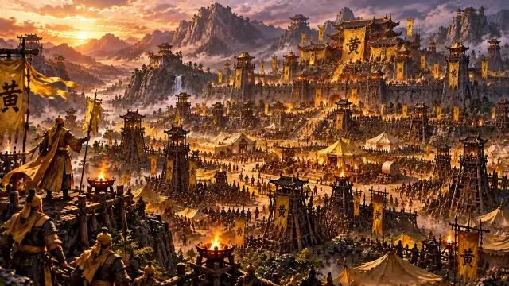
Chapter 1
Yellow Turban Rebellion
Zhuo County Fields · Qingzhou Castle · Guangzong
Three Kingdoms Idle RPG
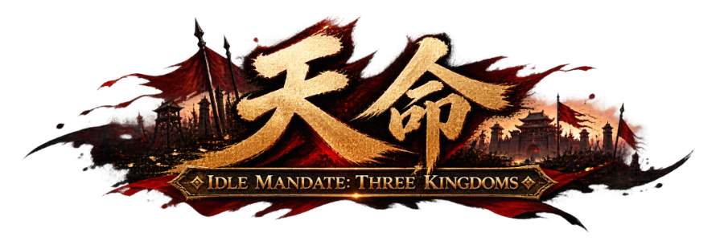
Forge your own hero and conquer 22 battlefields, from the Yellow Turban Rebellion to the final clash at the Wuzhang Plains. The battle goes on even when the app is closed.
Korean · English · Simplified Chinese · Japanese · Made by HuArt
7 chapters · 22 battlefields
Battlefields open in the order of the Three Kingdoms story, each guarded by a general of that era.

Zhuo County Fields · Qingzhou Castle · Guangzong
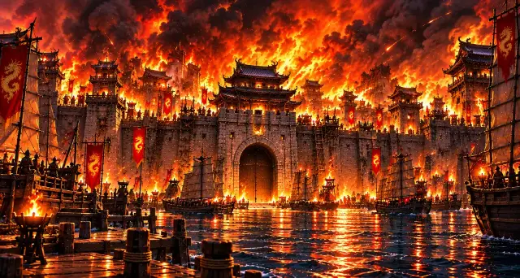
Sishui Gate · Hulao Gate · Luoyang
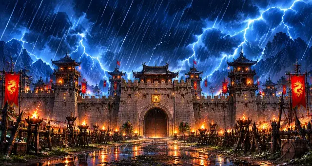
Jieqiao · Wancheng · Xiapi Castle · Shouchun
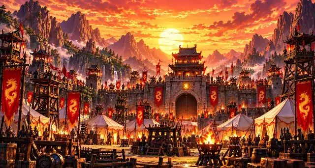
Baima · Guandu
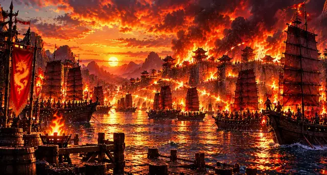
Xinye · Changban · Red Cliffs
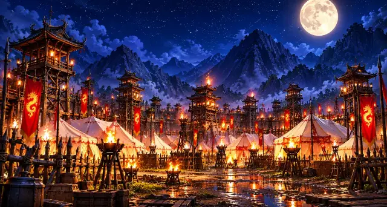
Tong Pass · Mount Dingjun · Fancheng · Yiling
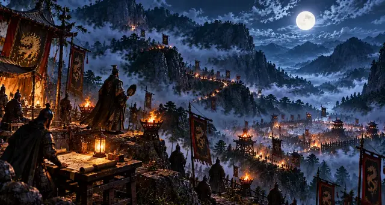
Nanman · Jieting · Wuzhang Plains
The free trial covers up to Chapter 2 (Dong Zhuo at Luoyang). The full game unlocks all 22 battlefields.
Features
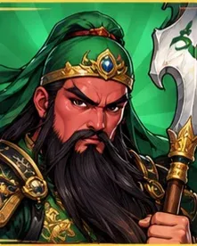
Pick a name, a class (Warrior, Archer, Strategist) and a kingdom (Wei, Shu, Wu, Warlords). Spend stat points yourself on every level-up.
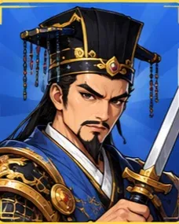
Guan Yu, Cao Cao, Zhou Yu, Lü Bu… Equip a Hero Card to fight with that general’s stats and Special Skill. Add their Spirit Beast and Weapon Card for Perfect Unity.
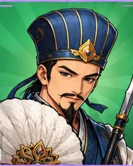
Hunting continues while the app is closed. Come back and collect the gold and gear you earned in one go.
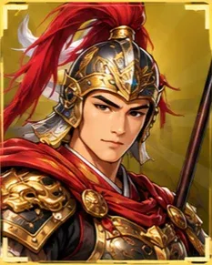
Besiege 12 cities in Conquest, fight Weekly Raids, duel in the Training Arena and climb the Hall of Generals.
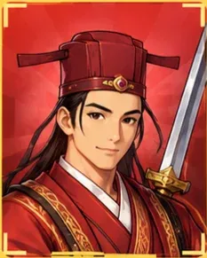
Build your Headquarters, collect 8 legendary Relics, rise from Commoner to Chancellor, light the constellations — then Unify the Realm.
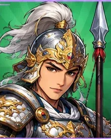
Parry a boss’s heavy attack at the right moment to counter-strike, and catch the Golden Cart as it rolls by.
Screenshots
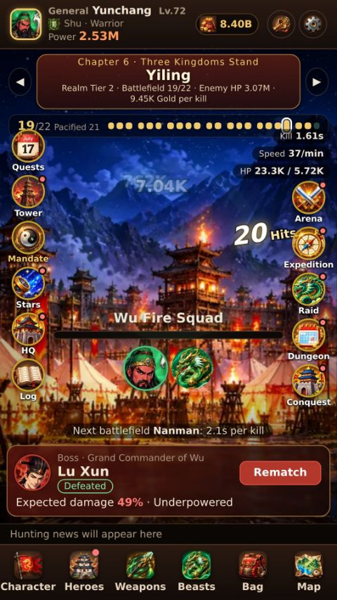
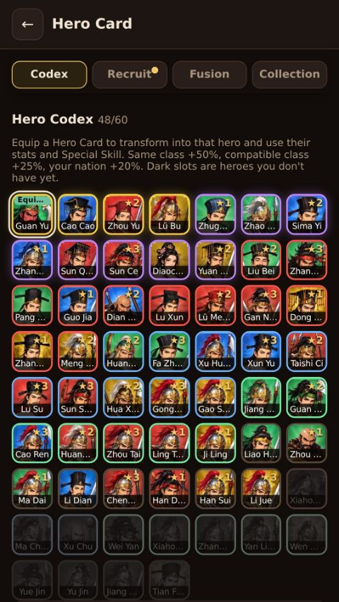
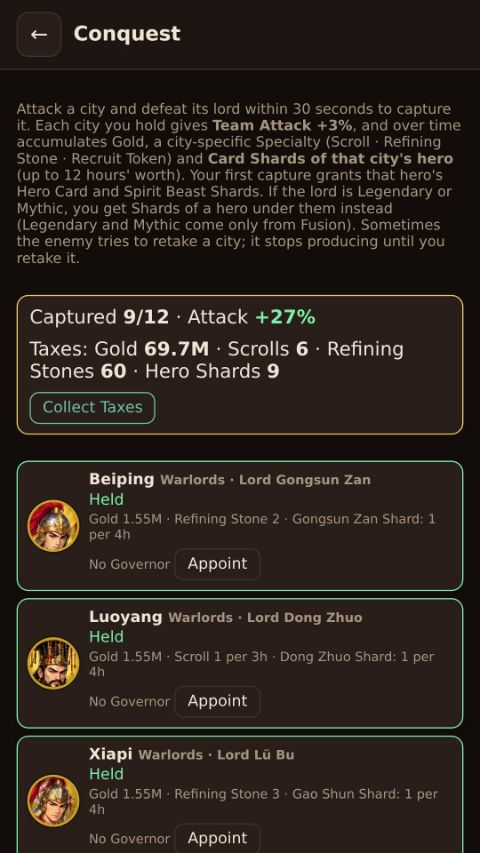
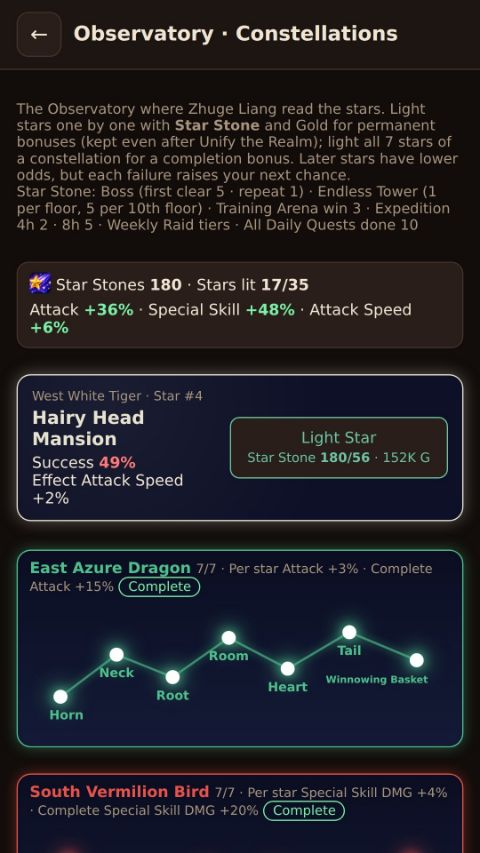
Play free through Chapter 2 (Dong Zhuo at Luoyang). One purchase unlocks every battlefield and all content, and your progress carries over.
To be added · HuArt